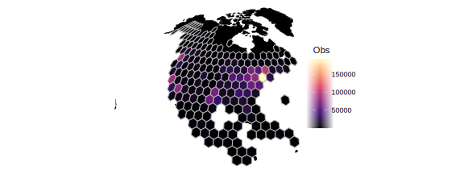
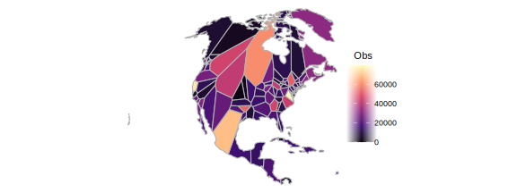
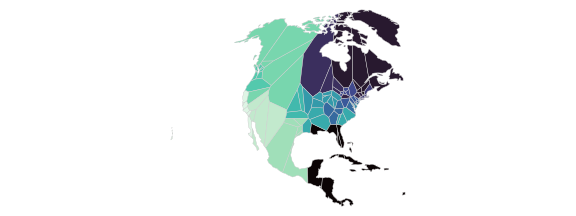
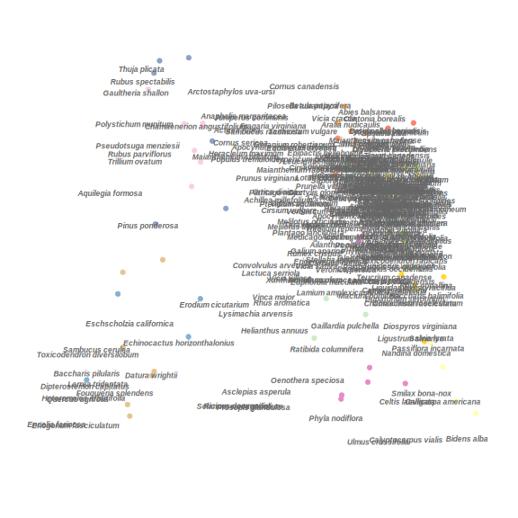
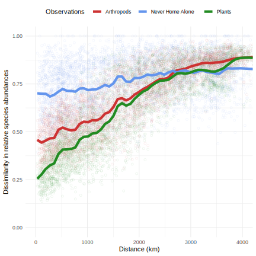
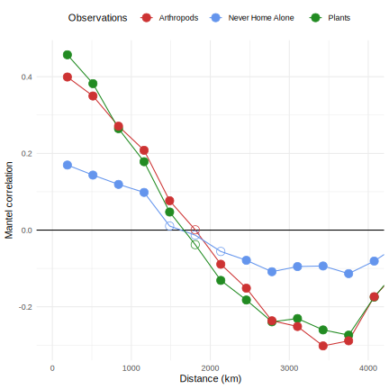
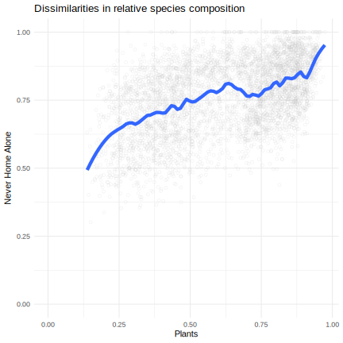

library(tidyverse)
library(sf)
sf_use_s2(FALSE)
library(vegan)
library(RColorBrewer)
library(viridisLite)
knitr::opts_chunk$set(comment="", cache=T, warning = F, message = F, fig.path = "images-nap/",
dev="svglite", dev.args=list(fix_text_size=FALSE),
fig.height=3, fig.width=8, out.width="1800px")iNaturalist observations
Download iNaturalist plant observations from GBIF. Then color observations by group.
rare_cutoff <- 500 #drop rare species
#iNaturalist observations
dat.common <- read_tsv("~/Downloads/0001545-250402121839773.csv.zip") %>%
select(species, order, decimalLongitude, decimalLatitude) %>%
drop_na(decimalLongitude, order) %>%
mutate(order = fct_lump_n(order, 7, other_level="other"),
species = fct_lump_min(species, rare_cutoff)) %>%
filter(species != "Other") %>%
write_tsv(file="./data/0001545-250402121839773_min500.tsv.gz")dat.points <- read_tsv("./data/0001545-250402121839773_min500.tsv.gz") %>%
mutate(species=factor(species), order=fct_relevel(order, "other", after=Inf)) %>%
as.data.frame() %>%
st_as_sf(coords = c("decimalLongitude", "decimalLatitude"), crs = "WGS84")
ortho <- "+proj=ortho +lat_0=12 +lon_0=-80" #orthographic projection from this vantage point
world <- rnaturalearth::ne_countries(scale = "small", returnclass = "sf") %>%
filter(continent=="North America") %>% st_union()group_by_cell <- function(points, grid, min_obs=0) {
#assign points to cells
dat.grid.cells <- st_intersects(grid, points)
grid$n_obs <- lengths(dat.grid.cells) #count points in each cell
#drop cells with few observations
cells.full <- which(grid$n_obs > min_obs)
grid.full <- grid[cells.full,]
#tally number of each species in each cell
dat.grid <- t(sapply(dat.grid.cells, function(x) table(points$species[x])))
rownames(dat.grid) <- grid$grid_id
dat.grid.full <- dat.grid[cells.full,]
list(data = dat.grid.full, grid = grid.full)
}Density of observations
Divide the area into hexagons and color by observation density. Missing cells have less than 20 observations.
hex_dim <- 30 #number of hexagons on each side
hex.sfc <- dat.points %>% st_make_grid(n=c(hex_dim, hex_dim), square = F)
hex <- hex.sfc %>% st_sf() %>% mutate(grid_id = 1:length(lengths(hex.sfc)))
hex_min_obs <- 20 #minimum number of observations allowed in cell
hex.obj <- group_by_cell(dat.points, hex, min_obs=hex_min_obs)
dat.hex <- hex.obj$data
hex.full <- hex.obj$grid
ggplot() + geom_sf(data=world %>% st_transform(ortho), fill="black", color="black")+
geom_sf(data=hex.full %>% st_transform(ortho), aes(fill=n_obs), linewidth=0.5, color="grey70") +
theme_void() + scale_fill_viridis_c("Obs", option="magma") 
Divide into areas of similar population
The number of observations in the hex grid is too uneven. Instead, try to divide the area into polygons of more even populations. First, sample some random seed observations - dense observations areas should have more sampled points. Then, define the region that is closest to each point, making a Voronoi diagram. The relative variation in observation number per cell is now half that of the hex grid.
n_seeds <- 100
set.seed(1)
dat.sample <- sample_n(dat.points, n_seeds)
tri <- dat.sample %>% st_geometry() %>% do.call(c, .) %>% st_voronoi() %>%
st_collection_extract() %>% st_set_crs("WGS84") %>% st_sf() %>%
mutate(grid_id = 1:nrow(.)) %>%
st_intersection(world)
tri_min_obs <- 8 #minimum number of observations allowed in cell
tri.obj <- group_by_cell(dat.points, tri, min_obs=tri_min_obs)
dat.tri <- tri.obj$data
tri.full <- tri.obj$grid
ggplot() + geom_sf(data=tri.full %>% st_transform(ortho), aes(fill=n_obs), linewidth=0.5, color="grey70") +
theme_void() + scale_fill_viridis_c("Obs", option="magma", limits=c(0,NA))
Cluster similar communities
Look at the observed community composition in each cell, defined as the relative abundance of each taxon. Assign each cell to a cluster of similar communities using the k-means algorithm. Set the number of clusters and assign each a color.
n_clusters <- 19
pal <- c(brewer.pal(7, "Set2"), brewer.pal(12, "Set3"))[1:n_clusters] %>% set_names(1:n_clusters)
set.seed(1)
tri.km <- dat.tri %>% decostand("hellinger") %>% kmeans(n_clusters)
ggplot() + geom_sf(data=tri.full %>% st_transform(ortho), aes(fill=factor(tri.km$cluster)), linewidth=0.2, color="grey40") +
theme_void() + scale_fill_manual(values=pal, guide="none")
Arrange clusters along gradient
Try to order the clusters by similarity in a linear gradient. This could potentially capture an environmental gradient, or what people are interested in for different areas. To do this, run a 1 dimensional NMDS ordination of the centers of each cluster, which orders clusters along the number line. Then map the ordered cluster number to a color scale.
tri.km.nmds <- metaMDS(tri.km$centers, k=1, trace=F)
tri.full$cluster <- factor(tri.km$cluster, levels=order(t(tri.km.nmds$points)))
ggplot() + geom_sf(data = tri.full, aes(fill=factor(as.integer(cluster))), linewidth=0.2, color="grey80") +
theme_void() + scale_fill_viridis_d("Cluster", option="mako", guide="none") 
Species that vary across space
To visualize the similarity between communities in each Voronoi cell, run an NMDS ordination on relative abundances. Each point represents a cell, with cells of similar communities clustering together. The colors for each cluster are the same as above. Common species are labeled near the cells where they are most observed and colored by their taxonomic order.
plot_nmds <- function(data, grid, min_to_show) {
nmds <- metaMDS(data, trace=F)
specs <- tibble(species = colnames(data), n = colSums(data), show = n>min_to_show) %>%
left_join(dat.points %>% as.data.frame %>% count(species, order, name="n_total"))
par(bg="white", mar=c(0,0,0,0))
plot(nmds, type="n", axes=F, ann=F)
points(nmds, display="sites", col=pal[grid$cluster], pch=19)
text(nmds, display="species", cex=0.7, font=4,
label = colnames(data),
col=if_else(specs$show, "grey40", alpha("black",0)))
par(bg="white")
}
plot_nmds(dat.tri, tri.km, min_to_show=2000)
Compare Never Home Alone creatures to plants outside
rare_cutoff <- 20 #drop rare species
dat.points.nha <- read_csv("data/observations-524273.csv.gz", guess_max=1e6) %>%
rename(species=scientific_name, decimalLongitude=longitude, decimalLatitude=latitude, phylum=iconic_taxon_name) %>% #GBIF names
mutate(phylum = phylum %>% fct_infreq() %>% fct_lump_n(7, other_level="other")) %>%
drop_na(decimalLongitude, phylum) %>%
as.data.frame() %>%
st_as_sf(coords = c("decimalLongitude", "decimalLatitude"), crs = "WGS84") %>%
st_intersection(world) %>%
group_by(species) %>% filter(n()>rare_cutoff) %>% ungroup() %>% drop_na(species) %>%
mutate(species=factor(species), species_int = as.integer(species))
#use same Voronoi cells as above (tri) to group nha data
tri.obj.nha <- group_by_cell(dat.points.nha, tri, min_obs=tri_min_obs)
dat.tri.nha <- tri.obj.nha$data # some of the cells contain less than tri_min_obs observations and are omitted
tri.full.nha <- tri.obj.nha$grid#geographic distance between cells
tri.centroids <- tri.full.nha %>% st_transform(ortho) %>% st_centroid()
dist.geog <- st_distance(tri.centroids, tri.centroids) %>% as.dist()
dist.geog.km <- dist.geog %>% as.vector() / 1000 #convert to km
#Bray-Curtis distance between relative species composistion of cells (for NHA and plants)
dist.nha <- dat.tri.nha %>% decostand("hellinger") %>% vegdist()
dist.plants <- dat.tri[rownames(dat.tri.nha),] %>% decostand("hellinger") %>% vegdist()
plot_mantel <- function(df) {
ggplot(df, aes(x=df[,1], y=df[,2])) +
geom_point(color="grey", shape=1, alpha=0.2) + geom_smooth() + theme_minimal() +
coord_cartesian(xlim=c(0,NA), ylim=c(0,NA))+
labs(title=paste("Mantel statistic =", round(cor(df[,1], df[,2]), 2)),
x = colnames(df)[1], y=colnames(df)[2])
}
plot_mantel(cbind(`Geographic distance (km)`=dist.geog.km, `Plant community dissimilarity`=dist.plants))
plot_mantel(cbind(`Geographic distance (km)`=dist.geog.km, `Indoor community dissimilarity`=dist.nha))
plot_mantel(cbind(`Plant community dissimilarity`=dist.plants, `Indoor community dissimilarity`=dist.nha))
# mc <- mantel.correlog(dist.plants, dist.geog/1000)
# plot(mc)